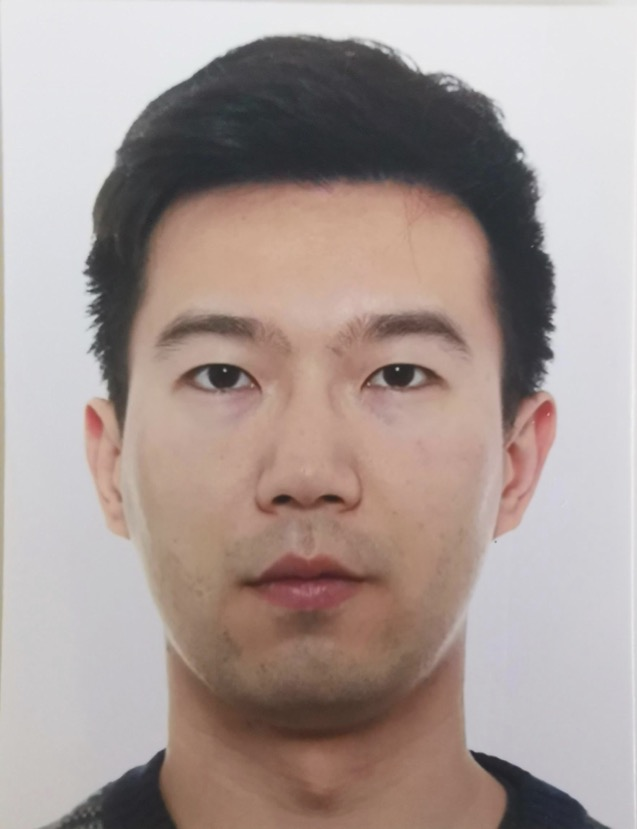

endloswu@gmail.com
mobile: +49 176 3633 4982
Nationality: Chinese
# Xian Wu
## Executive Summary
* Experienced Automotive Acoustic Researcher and Engineer with a strong background in acoustics, machine learning, and C++ programming
* Proficient in English, German, and Chinese
* Hands-on experience in designing, developing, and evaluating embedded systems with microphone arrays
## Working Experience
#### KU Leuven (Research Fellow, 2021/03 - present)
* Marie Skłodowska-Curie actions (MSCA) fellow
* Research Topic: Identification, localization, and separation of noise sources of hybrid vehicle drivetrains
#### HEAD acoustics GmbH (NVH Engineer, 2019/08 - 2021/02)
* Performed objective and subjective sound quality evaluation measurements
* Provided technical support for hardware, software solutions, and vibration measurement, analysis, and playback
* Assisted with implementation of programming API (Python, MATLAB)
#### eBay (Research Assistant in Machine Translation Team, 2017/12 - 2019/03)
* Collected and preprocessed data in Python
* Trained and evaluated statistical machine translation models
#### Robert Bosch GmbH (Internship and Bachelor Thesis at Gasoline Systems, 2016/09 - 2017/08)
* Planned, executed, and evaluated acoustical measurements on electric vehicle drives
* Developed functionalities in MATLAB and Python
* Trained artificial neural networks
* Implemented and tested on prototypical hardware
## Education & Qualifications
* Doctor of Philosophy - PhD, KU Leuven (ongoing)
* Master of Science - M.Sc., Mechanical Engineering, RWTH Aachen University (2017 - 2019)
* Bachelor of Science - B.Sc., Mechanical Engineering, RWTH Aachen University (2011 - 2017)
* Bachelor of Arts - B.A., German Language and Literature, Beijing International Studies University (2007 - 2011)
## Honors & Awards
* Student Design Competition: Most Creative Award
* Conference: MobileHCI 2022, The 24th ACM International Conference on Mobile Human-Computer Interaction · Oct 2022
* Issued by Huawei Canada
* Project: Shunfenger: a portable solution with Huawei Eyewear to enhance your hearing capability
* Video: https://youtu.be/E2lJgYcYeIU
## Projects
* FrequencyCat App (2023)
* Co-created an educational app that allows users to turn photos into sound, introducing concepts of sound waves, frequency analysis, and Fourier transform
* Presented at the #ScienceisWonderful event organized by the Marie Skłodowska-Curie Actions (MSCA) in Brussels
* Available on the iOS App Store: https://lnkd.in/dkK9bqft
## Misc. Information
* Languages: English (Full Professional), German (Full Professional), Chinese (Native or Bilingual)
* Availability: 3 month's notice